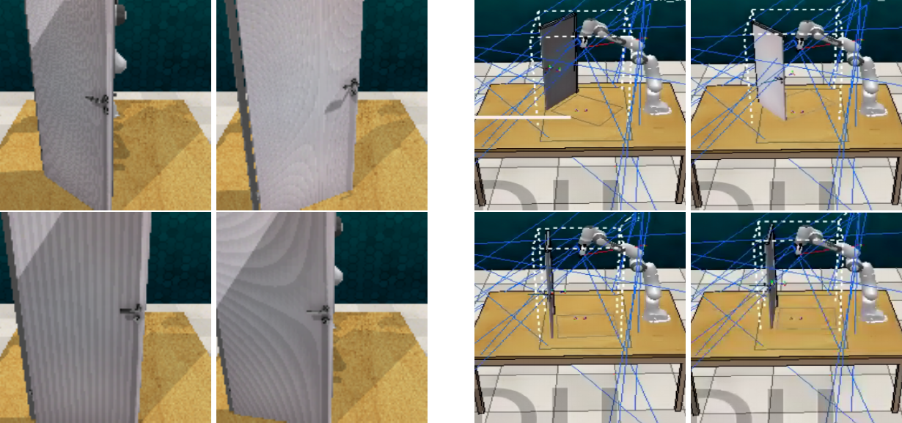
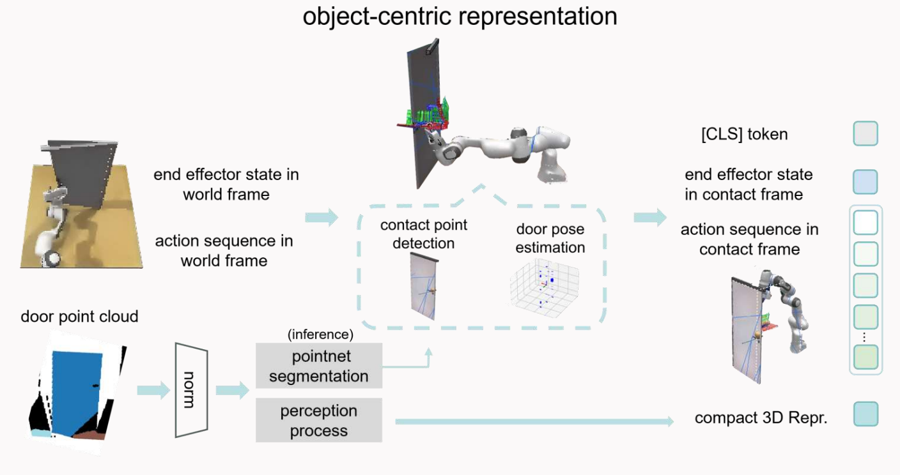
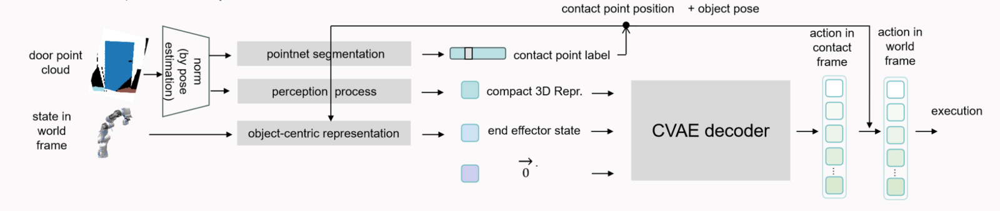
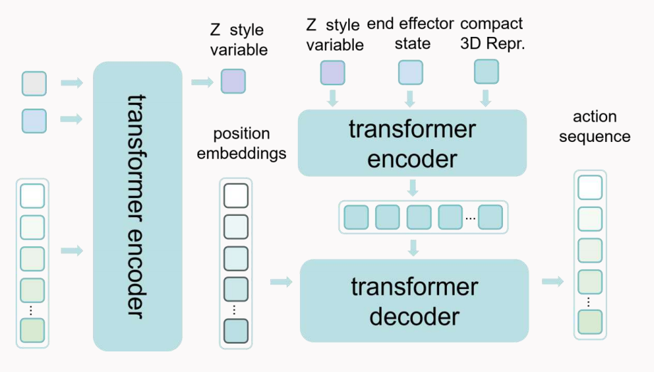
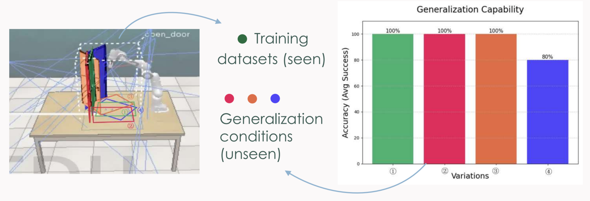
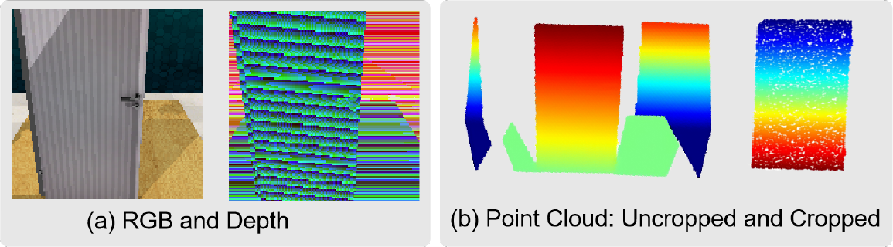
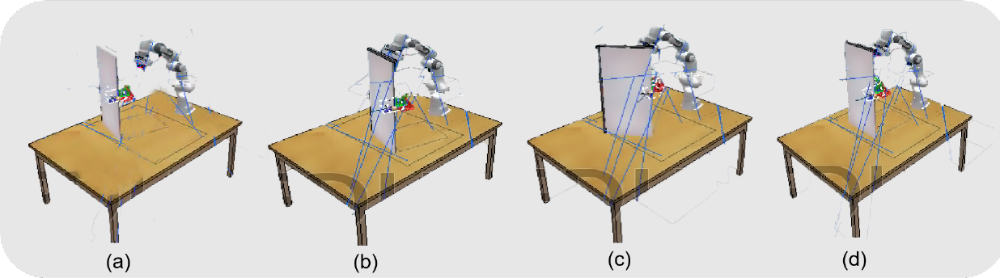
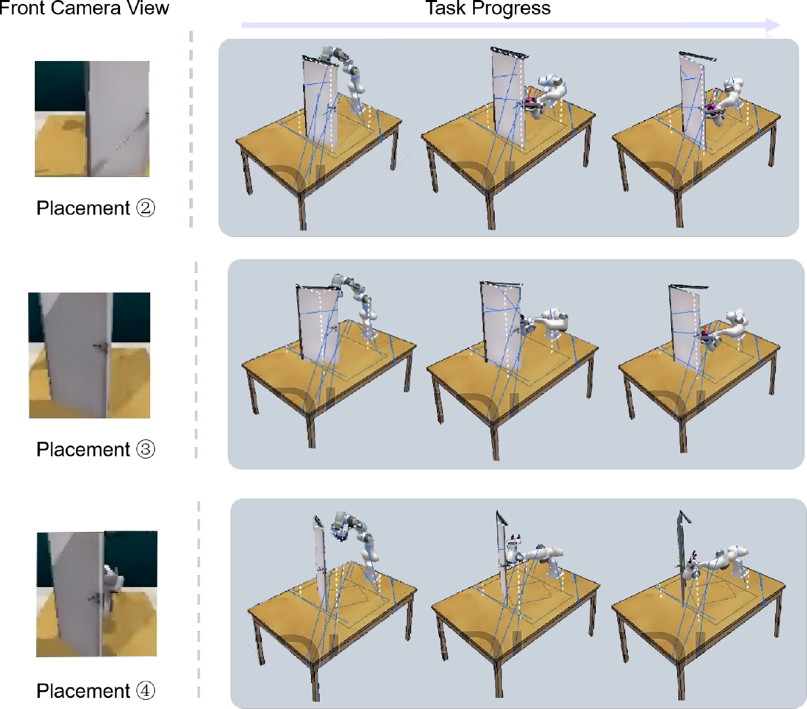
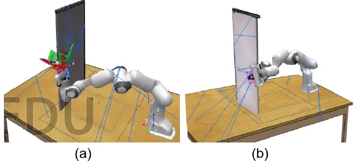

We introduce a novel approach for manipulating articulated objects with the ability to generalize across object translations, scaling, and robot kinematics. In traditional imitation learning, the learned policy fails if camera perspectives or the relative positions of objects change during inference, and it is specific to certain robot configurations. To tackle these challenges, we propose an object-centric representation for both observations of object motions and robot actions, which decouples vision-based decision making from robot execution. The center here refers to a canonical frame of the articulated object that remains invariant regardless of the contact point. We further use object-centric imitation learning to make stable predictions under varying camera views, object placements, and robot kinematics. Experiments and analysis demonstrate that our method achieves state-of-the-art performance in articulated object manipulation and dramatically improves generalization.
Pixel-based policies with trajectories anchored in the robot's base frame overfit to the exact camera pose and object placement seen during training. CORE instead reasons in a frame attached to the object itself, so the same policy transfers when the camera moves or the door is placed somewhere new.

A contact-anchored object frame turns observations and actions into a representation that is invariant to where the object is, where the camera is, and which robot executes the motion.

The frame is anchored at the contact point p* on the door. Its Z-axis follows the hinge, X is normal to the door surface, and Y = Z × X. Point clouds are rotated into this frame and centered at their centroid, and actions are expressed relative to p*.
A PointNet segmentation network predicts per-point contact confidence on the cropped, unit-normalized door cloud (1,024 points). Door orientation comes from an oriented bounding box, and a DP3-style MLP encoder compresses the cloud into a 64-d feature.
An ACT-style CVAE predicts chunks of end-effector poses and gripper widths in the object frame, conditioned on the 3D feature and the object-centric robot state. Predicted actions are mapped back to the robot's base frame for execution.
Given the estimated object rotation R and contact point p*, observations and actions are mapped into the object frame At:
At inference the predicted chunk is transformed back with p = Rᵀ · p̂ + p* and R = Rᵀ · R̂, so the robot's own kinematics never enter the learned policy.


40 expert demonstrations of door opening with a simulated Panda arm in RLBench. Training uses only placement ①; placements ②–④ and their camera views are out of distribution. Each setting is evaluated over 40 episodes × 3 seeds. Success means the door opens at least 25°.

| Method | Input | ① | ② | ③ | ④ | Avg. success (%) |
|---|---|---|---|---|---|---|
| ACT | RGB-D | ✓ | ✗ | ✗ | ✗ | 30.0 |
| DP3 | Scene point cloud | ✓ | ✗ | ✗ | ✗ | 15.0 |
| CORE (ours) | Object point cloud | ✓ | ✓ | ✓ | ✓ | 95.0 |




The remaining failures at placement ④ happen when the elbow collides with the door on the approach. The door still opens, but without proper use of the handle. An object-centric trajectory transfers across placements, but it still has to fall within the robot's reachable workspace. Otherwise planning can fail or the view can become occluded.
@thesis{xu2025core,
title = {CORE: Canonical Object Representations for Enhanced Manipulation},
author = {Tongmiao Xu},
type = {Bachelor's thesis},
school = {Xi'an Jiaotong University},
note = {Research conducted at the AdapComp Lab, National University of Singapore},
year = {2025}
}